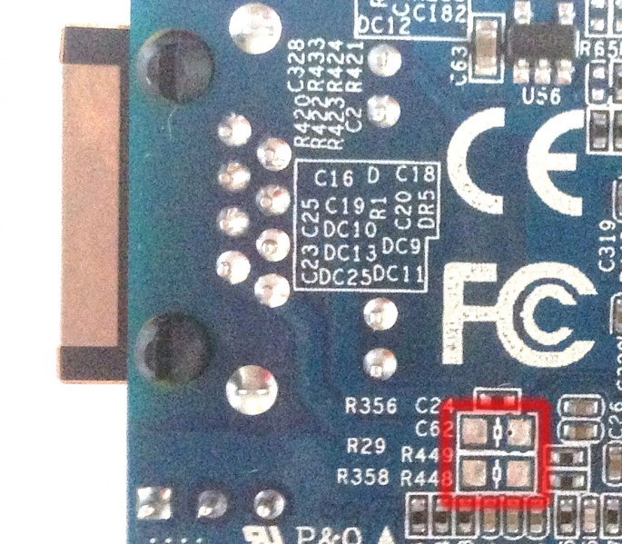
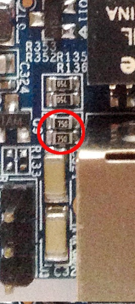

Zero使用POE供电
Zero带有POE供电，但是！它是非标准的POE供电，板子上如图两个空焊位可以用来焊接接通的电阻，默认留空以防意外。
4/5 PoE+ R29 0 Ohm 5V
7/8 PoE- R358 0 Ohm GND
通过将零欧姆电阻焊接到R29和R358接通PoE，可以使用5V来为板供电。注意，由于电缆电阻太高，电压会下降，5V不会在很远的距离上工作(大于4m)。
也可能在R29(PoE + to 5V VBUS)和R358(GND)之间焊接一个降压转换的东西，以便使用更高电压(24V或48V)的PoE。降压转换器用于将输入电压(24 / 48v)降到5V。

如果你打算在更高的电压下使用一个降压转换器，建议移除R135 / R136(75欧姆)的电阻，因为它们会消耗大量的热量，可能会烧坏!请看下面的图片，移走电阻。

不过如果你想让Zero为其他5v的POE设备供电，也可以参考前面第一张图焊接上0欧姆的电阻以及接通GPIO或者microusb的电源来往POE供电。
Zero上并不会有相关连通POE的协议，所以这也没办法和其他POE交换机进行工作。它也不支持802.3af/A，你可能需要一个TP-LINK的TL-POE10R http://www.tp-link.com/us/products/details/TL-POE10R.html来与交换机连接，然后设置成5v输出，然后与ZERO连通。